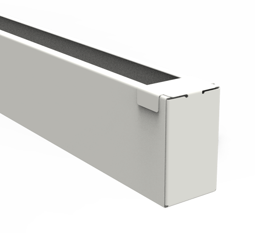

КУБООБРАЗНАЯ РЕЙКАBERGON / R01
CUBE
Кубообразная системаКлассический объёмный профиль для потолка, стены или фасада с открытым межреечным пространством.
- Высота
- 20–300 мм
- Ширина
- 20–500 мм
- Длина
- до 4 м